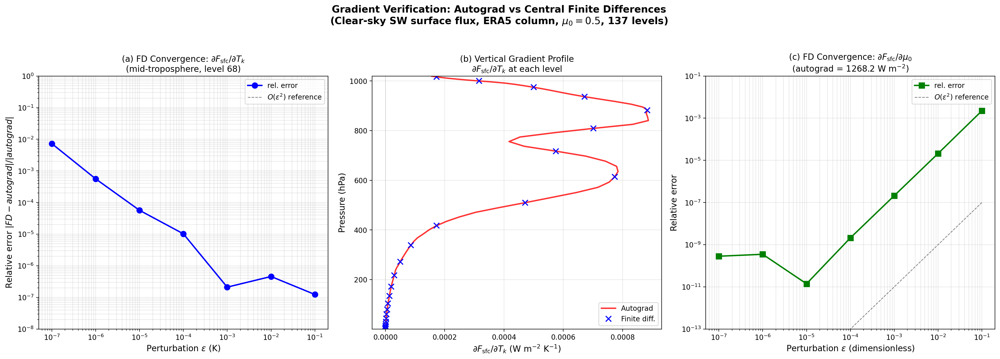
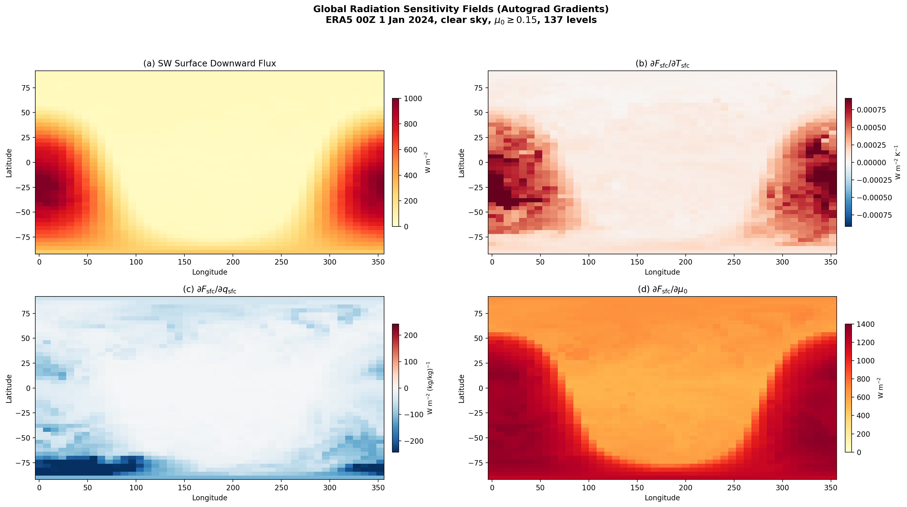
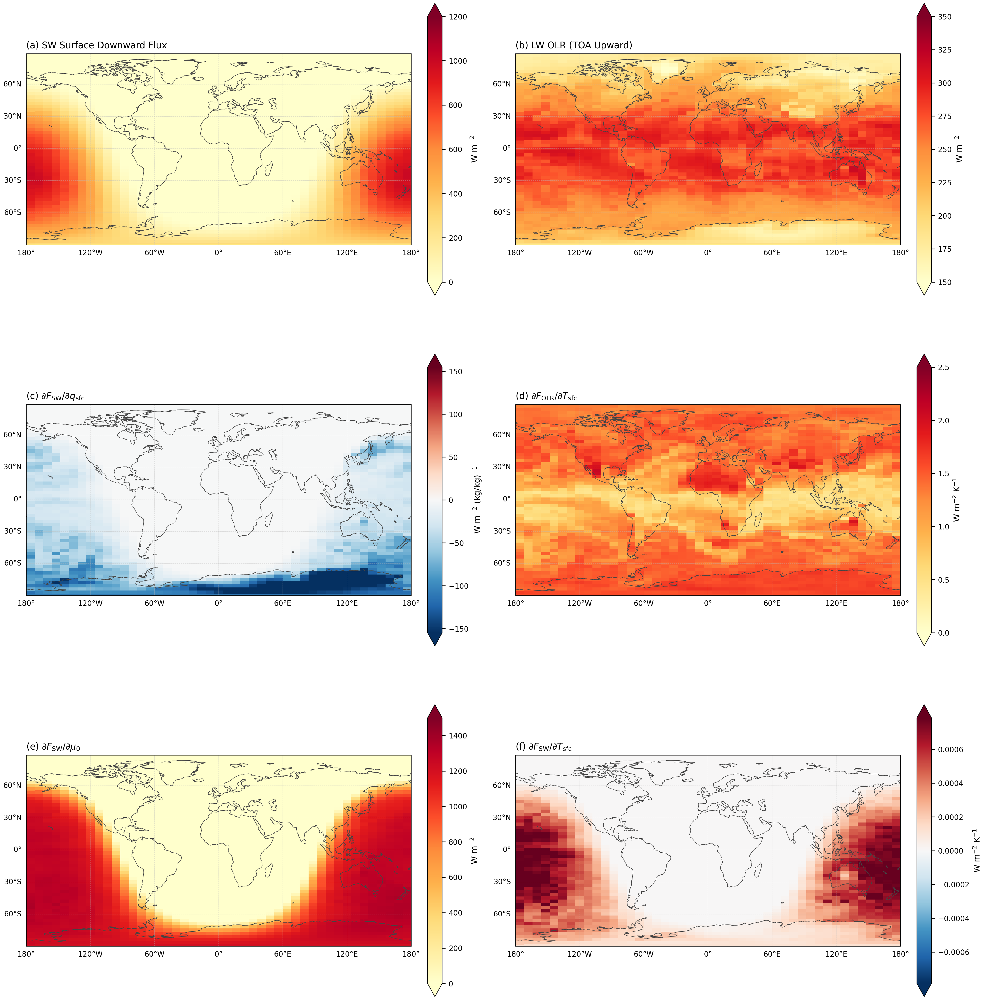

第六章 自动微分与全球敏感性场逐段精读
6.1 自动微分的优势
The defining capability of the reformulated scheme is that it provides exact radiative sensitivities via automatic differentiation, rather than the approximate sensitivities obtained from finite-difference perturbation experiments. In the latter approach, computing the sensitivity of the flux field to perturbations in $N_\mathrm{var}$ input variables across $N_\mathrm{lev}$ vertical levels requires $O(N_\mathrm{var} \times N_\mathrm{lev})$ independent forward evaluations; for a 137-level atmosphere with temperature, humidity, ozone, and cloud variables in each layer, this amounts to thousands of evaluations per column. In the differentiable formulation, the vector-Jacobian product for any scalar flux output (e.g., surface downward SW flux, TOA upward LW flux) with respect to all input variables at all levels is obtained in a single backward pass whose cost is comparable to that of one forward evaluation (7.7 s forward vs. 5.0 s backward for the single-column, 6-band calculation on a single CPU thread; on GPU with $N_\mathrm{col} = 32$ columns, each forward-plus-backward evaluation requires approximately 5.3 s, including data transfer).
重构方案的决定性能力是通过自动微分提供精确的辐射敏感度，而不是依赖有限差分扰动实验得到近似敏感度。对于任意标量通量输出，所有输入变量和垂直层的 vector-Jacobian product 都可通过一次反向传播获得，其计算代价与一次前向评估相当。
本段是论文核心卖点的声明：自动微分把多变量、多层的辐射敏感性计算从大量有限差分前向调用，转化为一次前向加一次反向传播。
6.2 梯度正确性验证

Gradient correctness verification: autograd vs. central finite differences for the clear-sky SW surface flux (ERA5 column, $\mu_0 = 0.5$, 137 levels). (a) Convergence of $\partial F_\mathrm{sfc}/\partial T_k$ at a mid-tropospheric level: the relative error follows the expected $O(\varepsilon^2)$ scaling until round-off dominates at $\varepsilon < 10^{-4}$. (b) Vertical profile of $\partial F_\mathrm{sfc}/\partial T_k$: autograd (red line, all levels) vs. finite differences (blue $\times$, sampled every 5 levels). (c) Convergence of $\partial F_\mathrm{sfc}/\partial \mu_0$, reaching $1.4\times10^{-11}$ relative error at $\varepsilon = 10^{-5}$.
6.3 SW global sensitivity fields

Global radiation sensitivity fields computed via autograd on 2,070 subsampled columns from the ERA5 0.5° grid (00 UTC 1 January 2024, clear sky with negligible cloud fraction $cc=10^{-6}$, 137 levels). (a) Surface downward SW flux (reference). (b) $\partial F_\mathrm{sfc}/\partial T_\mathrm{sfc}$: small positive sensitivity via pressure-broadening. (c) $\partial F_\mathrm{sfc}/\partial q_\mathrm{sfc}$: negative everywhere, strongest in the humid tropics. (d) $\partial F_\mathrm{sfc}/\partial \mu_0$: uniformly positive, peaking at low latitudes. Divergent colormaps (blue-white-red) are used for signed quantities. An independent finite-difference cross-check at one sample column confirms all three gradients to relative errors at or below $10^{-6}$.
Physical interpretation of SW sensitivity fields:
- ∂F/∂q: negative everywhere, because increased water vapor strengthens near-infrared absorption and reduces surface shortwave flux.
- ∂F/∂T: small positive values, reflecting the indirect temperature influence through pressure broadening.
6.4 Combined SW+LW feedback kernel
The sensitivity maps presented above demonstrate the diagnostic capability of the differentiable scheme for the shortwave component. We now extend the analysis to the combined shortwave-plus-longwave feedback kernel by computing both SW and LW radiative sensitivities on the same subsampled ERA5 grid (Figure $\ref{fig:sw_lw_kernel}$).
我们将分析扩展到SW+LW联合反馈核：在同一ERA5 0.5°网格的2,070个抽样列上计算SW和LW辐射敏感度。长波地表温度敏感性从湿热带的约0.4 W m-2 K-1到干燥极地的约2.1 W m-2 K-1。

Combined SW+LW feedback kernel computed via automatic differentiation on the same 2,070 subsampled ERA5 columns (00 UTC 1 January 2024, clear sky, 137 levels). Divergent colormaps (blue-white-red, red positive) are used for signed sensitivities; sequential colormaps are used for flux magnitudes. (a) SW surface downward flux. (b) LW outgoing longwave radiation (OLR). (c) ∂FSW/∂qsfc: negative everywhere (water-vapor near-infrared absorption), strongest in the humid subtropics. (d) ∂FOLR/∂Tsfc: LW Planck feedback, highest in polar regions due to the dry atmospheric window. (e) ∂FSW/∂μ0: uniformly positive in the daylit hemisphere. (f) ∂FSW/∂Tsfc: small positive SW temperature sensitivity via pressure-broadening.
LW Planck反馈的"水汽遮蔽"效应（最重要的发现）：
∂F_OLR/∂T_sfc（仅扰动地面温度、保持大气温度不变）的范围0.4-2.1 W/m²/K，远小于黑体导数4σT³（~5-6 W/m²/K）。
- 原因：只有通过大气红外窗区(8-12μm)逃逸的那部分地面发射才能直接调制OLR。其余被温室气体吸收重发射
- 极地高（~1.5）：极地大气干燥→窗区透明→地面温度变化高效传递到TOA
- 热带低（~0.9）：热带大气更湿→窗区水汽连续吸收更强→地面贡献被遮蔽
科学意义：这个效应在逐线积分计算中已知，但简化的核表格假设固定透过率，无法捕捉这种状态依赖性。可微分方案天然区分"只变地面温度"（surface-only）和"整柱均匀升温"（uniform warming）两种反馈——这正是辐射反馈分析中的一个关键区分。
SW水汽敏感性的空间结构：极地近零（干燥大气+极夜），副热带最强(-80 W/m²·(kg/kg)⁻¹)——水汽吸收带饱和时增量吸收最大。
日/夜分离验证：LW Planck反馈日间(1.25)=夜间(1.25) W/m²/K——纯热过程不依赖太阳。SW敏感性在极夜半球完全为零。这证明了可微分方案干净地分离了太阳和热辐射的两个物理regime。
方法论更正（LW向下通量方向Bug）：在开发云辐射效应验证时，发现 rtrn1a.py 的输出块对向上和向下通量列表都应用了同一个 torch.flip。向上通量列表是"从地表往上"构建的（flip后正确→TOA-first）；但向下通量列表已经是"从TOA往下"构建的（flip后反而反了），导致 flux_down[地表面] ≈ 0 W/m²（应为~300-400）。
修复：只对向上列表 flip，向下列表保持原序；同时填充地表半层值使加热率正确。关键验证：OLR（flux_up[:,0]）bit-exact不变（311.52282726 W/m²修复前后完全一致），所以论文所有LW验证结果（基于OLR）不受影响。这个bug之所以长期未发现，是因为之前所有LW结果都只用了OLR，从未消费过 flux_down。